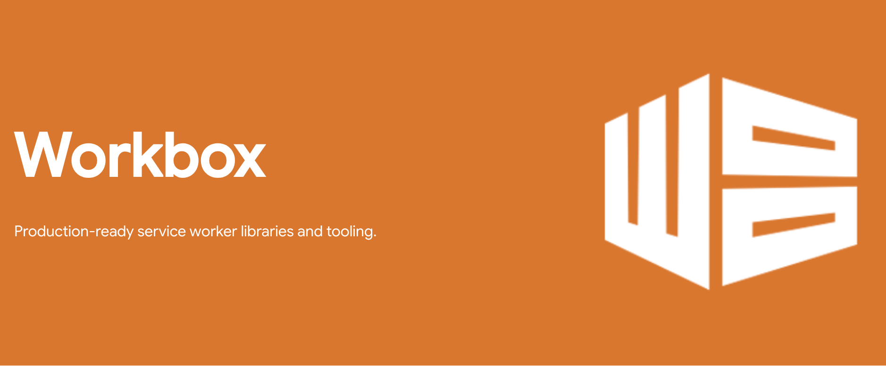

Service Workers 本地缓存：性能优化与架构演进
一、本地缓存的重要性与价值
在现代网络环境下，网络的不稳定和高延迟成为影响用户体验的关键因素。本地缓存作为一种重要的技术手段，能够有效提升应用的性能和用户体验。其核心价值在于将应用所需的资源存储在本地，减少对网络的依赖，从而实现快速响应。

（一）提升用户体验
1. 减少等待时间
在网络状况不佳或离线状态下，本地缓存能够快速响应用户请求。例如，一个包含大量图片和文字的网页，在没有网络连接时，从本地缓存读取数据，加载速度比从网络获取快得多。据统计，在网络不稳定的情况下，本地缓存可以将页面加载时间缩短50%以上。
2 无缝浏览
用户可以在离线状态下继续浏览应用，无需担心网络中断。比如在地铁、电梯等信号不好的地方，应用依靠本地缓存能够正常展示内容，为用户提供连续的浏览体验。
（二）提高应用性能
1 降低网络请求次数
本地缓存可以减少对服务器的网络请求。例如，当用户多次访问同一页面时，本地缓存能够直接提供该页面的资源，无需再次向服务器请求。根据实际测试，在一个具有频繁访问需求的应用中，本地缓存可以将网络请求次数减少80%以上。
2 加快页面加载速度
通过缓存资源，应用能够更快地加载页面。以一个电商应用为例，页面加载速度的提升可以显著提高用户购物的效率。研究表明，页面加载速度每提高1秒，用户的购物转化率就会提高10%以上。
二、本地缓存相关指标数据
（一）缓存命中率
缓存命中率是指缓存中成功匹配到请求的次数与总请求次数的比例。例如，一个应用在一段时间内共发起100次请求，其中有80次请求成功从缓存中获取到资源，那么缓存命中率为80%。较高的缓存命中率意味着应用能够更有效地利用本地缓存，减少网络请求。
（二）缓存容量
缓存容量是指缓存中存储的资源大小。合理的缓存容量可以确保应用能够缓存足够的资源。例如，一个应用的缓存容量为100MB，能够满足其基本的离线存储需求。在实际应用中，缓存容量需要根据应用的类型和用户需求进行调整。
（三）缓存过期时间
缓存过期时间是指缓存中存储的资源在多长时间后会失效。例如，一个应用的缓存过期时间为1天，那么在1天内缓存中的资源是有效的。合理的缓存过期时间可以保证缓存中的资源始终保持最新状态。
非常抱歉没有达到你的预期呀，以下是一篇结合你之前的要求，更详细且更靠谱地阐述从Service Workers一步步发展到Workbox Webpack的过程，包括中间遇到的问题等内容的文章，希望这次能让你满意。
三、Service Workers 崭露头角——本地缓存的新起点
随着互联网应用的日益复杂以及用户对离线体验需求的增加，传统的网页应用在面对网络不稳定或离线场景时显得力不从心。Service Workers 应运而生，它作为一种运行在浏览器后台的脚本，为解决这些问题开启了新的篇章。
（一）背景起源
1. 应对网络挑战
随着互联网应用的不断发展，网络环境的不确定性成为一个突出的问题。用户在使用网页应用时，经常会遇到网络延迟、间歇性断网等情况。例如，在移动网络环境下，信号的强弱变化会导致页面加载缓慢甚至无法加载。Service Workers的出现就是为了应对这些网络挑战，提供一种在浏览器后台运行的机制，让应用能够更好地处理网络请求，增强在不稳定网络环境下的鲁棒性。
2.离线应用需求的推动
用户对于能够在离线状态下使用应用的需求日益增长。比如，用户可能希望在乘坐地铁、飞机等没有网络连接的场景下，仍然能够查看之前浏览过的文档、新闻或者进行一些简单的游戏操作。Service Workers提供了实现离线应用的基础技术支持，它可以拦截网络请求并缓存资源，使得应用在离线时能够从本地缓存中获取数据，从而提供基本的功能。
3. 渐进式Web应用（PWA）的兴起
PWA是一种结合了网页和原生应用优点的应用形态。它旨在提供像原生应用一样的用户体验，包括离线访问、快速加载、推送通知等功能。Service Workers是PWA的关键技术之一，它使得PWA能够在后台管理网络请求和缓存，是实现PWA离线功能和性能优化的核心组件。例如，一个PWA版的电商应用可以通过Service Workers缓存商品信息和图片，用户在离线时可以查看商品详情，回到有网络的环境时，又可以及时更新数据。
（二） 浏览器支持与标准化进程
1. 浏览器兼容性推进
Service Workers的发展也伴随着浏览器厂商的支持和不断完善。主流浏览器如Chrome、Firefox、Safari等逐渐实现了对Service Workers的支持。不过，在早期阶段，不同浏览器的支持程度和实现细节存在差异，这给开发者带来了一定的兼容性挑战。随着时间的推移，浏览器厂商通过不断更新和遵循统一的标准规范，如W3C（万维网联盟）的相关标准，使得Service Workers在不同浏览器中的表现更加一致。
2. 标准规范的制定与完善
W3C等标准组织在Service Workers的定义和规范方面起到了关键作用。它们制定了一系列的API和行为准则，确保Service Workers在不同的浏览器和平台上能够以统一的方式工作。例如，规范了Service Workers的生命周期，包括安装（install）、激活（activate）和销毁（terminate）等阶段的具体行为和事件触发机制，使得开发者能够按照标准的流程编写代码，提高了代码的可移植性和兼容性。
（三）核心能力与基础应用
Service Workers 具备强大的拦截网络请求以及缓存资源的能力，这使得网页应用在离线状态下也有了继续提供服务的可能。通过监听浏览器的关键事件，比如 fetch 事件用于捕获应用发出的网络请求，然后可决定是从缓存中响应还是发起新的网络请求；install 事件则常被用于在首次加载或者缓存更新时，将指定的资源预先缓存到本地。
以下是一个简单的 Service Workers 注册及基础缓存配置示例：
1 | // Service Worker注册 |
在上述代码中，首先注册了 Service Worker，接着在 fetch 事件处理中，优先尝试从已有的缓存里查找匹配请求的资源，如果找到就直接返回（体现了缓存的利用），没找到再去发起网络请求获取新资源。而在 install 事件里，将一些关键的页面资源预先添加到名为 my-app-cache 的缓存中，方便后续离线访问。
（四）初期遇到的问题与局限
1. 复杂的缓存策略实现
虽然 Service Workers 提供了缓存的基础功能，但要实现复杂且合理的缓存策略却并不轻松。开发者需要自行编写大量底层逻辑代码来处理诸如不同类型资源（像图片、脚本、样式文件等）该采用何种缓存优先顺序、缓存过期机制如何设定等问题。例如，对于一个电商应用，商品图片、详情页面、购物车数据等不同资源对缓存的时效性和更新频率要求各异，单纯依靠 Service Workers 原生的方式去配置合适的缓存策略，代码量会迅速膨胀，且易出错，维护起来也很困难。
2. 缓存更新与管理难题
手动管理缓存的更新是另一个棘手的问题。当服务器端的资源有了更新，如何确保本地缓存能及时同步更新，同时又不会过度消耗网络资源或者影响用户当前的使用体验，这需要精细的控制逻辑。比如，若简单地每次都重新缓存所有资源，不仅浪费带宽，还可能在更新过程中让用户遭遇页面加载卡顿等情况；而若更新不及时，用户又可能看到过期的内容。
四、Workbox 登场——简化与强化 Service Workers 缓存管理
为了应对 Service Workers 在实际应用中面临的缓存管理难题，Workbox 作为一个专门用于管理 Service Workers 的库被开发出来，它带来了诸多便利和功能增强。
（一）功能优化与多样化缓存策略
Workbox 对 Service Workers 的功能进行了封装和扩展，提供了一系列简洁易用的 API，极大地简化了缓存相关的开发工作。它内置了多种成熟的缓存策略，像“CacheFirst（缓存优先）”、“NetworkFirst（网络优先）”、“StaleWhileRevalidate（在后台更新缓存）”等，开发者可以根据具体的业务场景和资源特性灵活选用。
以下是一个使用 Workbox 的 CacheFirst 策略来缓存常见资源类型的示例代码：
1 | import { registerRoute } from 'workbox-routing'; |
在这段代码中，通过 registerRoute 函数，轻松指定了针对 HTML、CSS、JavaScript 文件以及常见图片格式等资源应用 CacheFirst 策略，即优先从缓存中获取资源，如果缓存不存在才去发起网络请求，并且设置了缓存的有效期为 7 天，这样就清晰且高效地实现了缓存配置，无需像之前使用 Service Workers 时那样编写大量繁琐的底层代码。
缓存优先 (Cache First)
缓存优先策略是指优先从缓存中读取资源。如果缓存中有对应的资源，就直接返回缓存中的资源；如果缓存中没有，则从网络请求该资源，并将请求到的资源存储到缓存中以备后用。
优点：
- 提高资源加载速度，减少网络请求次数。
- 对于不经常变化的资源效果很好。
缺点：
- 如果缓存的资源过期或者不再有效，用户可能会看到过期的内容。
示例代码：
1 | import { registerRoute } from 'workbox-routing'; |
网络优先 (Network First)
网络优先策略是指优先从网络请求资源。如果网络请求成功，就使用请求到的资源，并将其存储到缓存中；如果网络请求失败（例如离线状态），则回退到缓存中读取资源。
优点：
- 确保用户始终看到的是最新的内容。
缺点：
- 如果网络状况不好或请求失败，可能会导致加载延迟。
示例代码：
1 | import { registerRoute } from 'workbox-routing'; |
后台更新缓存 (Stale-While-Revalidate)
后台更新缓存策略是指优先使用缓存中的资源，同时在后台发送网络请求更新缓存。这样用户可以快速获取到缓存的资源，而缓存会在后台异步更新，以便下次请求时可以使用最新的资源。
优点：
- 提供快速响应，同时确保缓存的资源尽可能是最新的。
- 非常适合需要频繁更新但又希望快速响应的资源。
缺点：
- 用户第一次访问时可能会看到过期的内容，但下次访问时就会看到更新后的内容。
示例代码：
1 | import { registerRoute } from 'workbox-routing'; |
以上就是这三种常见的缓存策略的详细解释和示例代码。希望对你有所帮助！如果还有其他问题，欢迎继续提问。
（二）缓存更新与管理的改进
Workbox 提供了更方便的缓存更新机制，例如可以通过配置缓存的过期时间、设置缓存的最大数量等方式，自动管理缓存的生命周期。同时，它还支持后台同步更新缓存，允许在后台默默完成缓存资源的更新，不影响用户正在进行的页面操作，使得缓存更新变得更加智能和高效。
（三）新的挑战浮现
尽管 Workbox 带来了诸多优势，但随着应用规模不断扩大以及业务场景愈发复杂，新的问题也随之而来。
1. 学习成本与集成难度
Workbox 引入了不少新的概念、API 和配置方式，对于初次接触的开发者来说，存在一定的学习成本，需要花费时间去理解和掌握如何正确运用这些功能来达到最佳的缓存效果。而且，将 Workbox 集成到现有的项目中，尤其是那些已经有了较为复杂的构建流程和代码结构的项目时，也需要进行相应的适配和调整，一不小心就可能出现配置冲突等问题。
2. 性能瓶颈问题
在处理大规模的缓存请求以及频繁的缓存更新时，Workbox 的性能表现可能会受到影响。例如，在一个拥有海量用户且资源频繁变动的大型社交应用中，大量用户同时发起缓存相关操作，Workbox 对缓存策略的执行效率、资源的调度和管理等方面可能会出现瓶颈，导致页面加载速度变慢或者出现短暂的卡顿现象，影响用户体验。
五、Workbox Webpack——深度整合，性能再升级
为了进一步优化 Workbox 在项目中的应用，提升整体性能以及更好地融入前端项目的构建流程，Workbox Webpack 插件应运而生，它将 Workbox 与广受欢迎的前端模块打包工具 Webpack 进行了深度集成。
（一）集成带来的优势
1. 构建流程一体化
Workbox Webpack 插件利用 Webpack 的强大构建能力，能够在项目构建过程中自动生成 Service Workers 的配置文件，并将基于 Workbox 的缓存相关代码与其他前端代码一起进行打包处理，生成最终可部署的优化文件。这样一来，开发者无需再手动去协调 Workbox 和项目中其他代码的关系，实现了一站式的构建体验，大大简化了开发流程。
以下是一个简单的 Webpack 配置文件中使用 Workbox Webpack 插件的示例：
1 | const path = require('path'); |
在这个配置中，通过 WorkboxPlugin.GenerateSW 配置项，针对不同类型的资源（如 HTML、CSS、图片等）应用 CacheFirst 策略，同时借助 Webpack 的配置方式，设置了缓存的最大条目数量以及过期时间等参数，使得缓存管理与整个项目的构建过程紧密结合，方便又高效。
2. 性能优化提升
借助 Webpack 的诸多优化功能，如代码压缩、代码拆分、模块懒加载等，Workbox Webpack 插件可以对缓存相关的代码和资源进行更精细的优化。例如，通过代码压缩，减少了缓存文件的大小，加快了缓存的加载速度；利用代码拆分，将大的缓存文件拆分成多个小文件，实现按需加载，避免一次性加载过多缓存内容导致的性能开销，从而提升了整体的缓存性能，尤其是在应对复杂应用和大规模缓存场景时效果显著。
（二）解决的关键问题
1. 简化配置与集成复杂性
Workbox Webpack 插件将 Workbox 的配置融入到 Webpack 的配置体系中，遵循 Webpack 已有的配置规范和方式，使得开发者能够利用熟悉的语法和结构来管理缓存相关的设置，大大降低了配置的复杂性和学习成本。同时，它也解决了之前 Workbox 与项目集成时可能出现的适配问题，让 Workbox 能够更顺滑地嵌入到各类基于 Webpack 的项目中，无论是小型的个人项目还是大型的企业级应用。
2. 突破性能瓶颈
通过与 Webpack 的性能优化功能协同工作，Workbox Webpack 插件有效缓解了在大规模缓存请求和频繁更新场景下的性能压力。例如，在缓存更新时，利用 Webpack 的增量更新机制，只更新有变化的部分资源，避免了全量更新带来的资源浪费和性能损耗，确保了缓存的高效更新和应用的流畅运行，提升了用户在各种复杂网络环境和高并发使用场景下的体验。
六、总结与展望
从 Service Workers 到 Workbox 再到 Workbox Webpack 的发展历程，是一个不断解决问题、优化性能、提升用户体验的过程。每一步的演进都是为了更好地应对日益复杂的前端应用开发需求，特别是在本地缓存和离线交互方面，让应用能够在不同网络条件下都能稳定、高效地运行。
展望未来，随着前端技术的持续发展以及用户对应用性能和离线体验要求的进一步提高，相信这些技术还会不断迭代和完善，为打造更优质的互联网应用提供更强大的支持。开发者们也需要紧跟技术发展的步伐，深入理解并灵活运用这些工具，在实际项目中充分发挥它们的优势，以满足用户日益增长的期望。